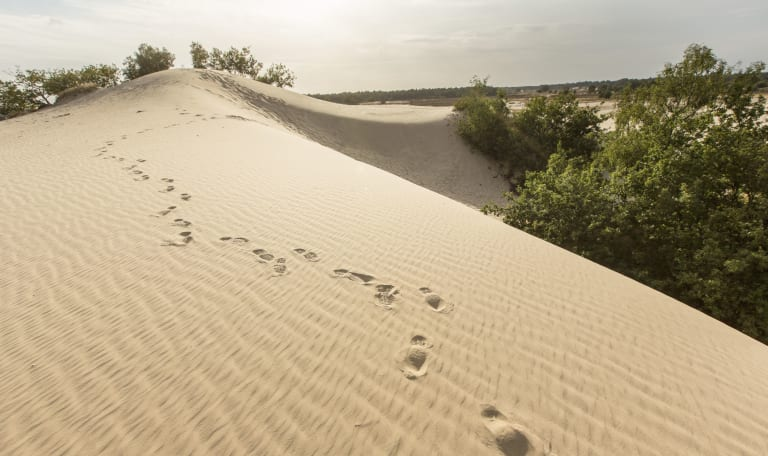
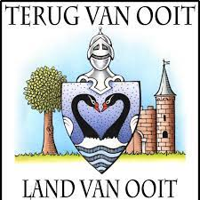

Drunense Duinen
In de Loonse en Drunense Duinen vind je bos, heide en vooral veel zand. Het is een van de grootste stuifzandgebieden van West-Europa.
De wind kan op veel plekken ongestoord waaien en dat zorgt voor een steeds veranderend landschap.
Door het in 1921 aan te kopen is het al 100 jaar beschermd en kunnen we nu nog van deze Brabantse Sahara genieten.

Het land van ooit
We hebben allemaal wel herinneringen aan vroeger, als het om pretparken gaat.
Gelukkig kun je in de meeste gevallen (nu wellicht met eigen kinderen) die oude nostalgie weer opsnuiven.
Helaas is er ook één zo’n bijzonder typerend park, waar dat helaas niet meer mogelijk is: Het Land van Ooit.
Het ging hier om een wel heel speciaal kinderthemapark (met als thema ridders) met een oppervlakte van 34 hectare.
Het park in Drunen was prachtig aangelegd en ‘Kinderen zijn de baas’.
In het park liepen overal hoogwaardige acteurs rond, die met hun personages het themapark extra kleur gaven.
